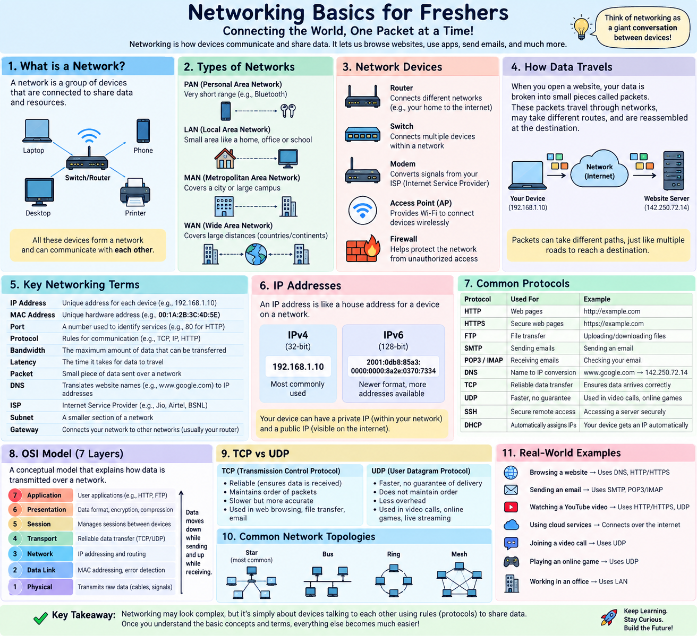

Everything a fresher needs to know about how computers talk to each other across the internet — explained with simple real-world analogies, interactive visualizers, and a complete key terms dictionary.
~ "No boring jargon! Learn how packets actually travel!" 🚀
Are these 3 networking boxes confusing? Think of your network like a Large Apartment Building & Postal System:
0s & 1s) your devices understand.
A Computer Network is simply two or more connected devices sharing data and resources. Whether you are sending a WhatsApp text, watching YouTube, or placing a food order online, data travels across networks.
• PAN (Personal Area Network): Bluetooth headset connected to your phone (~10 meters).
• LAN (Local Area Network): Home Wi-Fi or college computer lab.
• MAN (Metropolitan Area Network): Cable TV network spanning across a city.
• WAN (Wide Area Network): The global Internet connecting millions of LANs!
• Client-Server: Your browser (Client) requests a web page from a central machine (Server). Used by web apps, banks, Netflix.
• Peer-to-Peer (P2P): Devices talk directly to each other without a central server (e.g. BitTorrent, AirDrop).
The width of the highway. Measures maximum data capacity per second (e.g. 100 Mbps).
The travel time for a packet to reach the destination and return. Measured in milliseconds (ms).
The actual amount of traffic successfully delivered right now considering congestion.
Data sent over a network is broken down into small chunks called packets. If packets are dropped due to network congestion or weak Wi-Fi, it's called Packet Loss, causing audio glitches or video buffering.
How does physical signal travel between laptops, smartphones, and servers?
Broadcasting device. Receives data on one port and blindly repeats it to every single connected device. Inefficient & insecure.
Connects devices within the same LAN. Reads target MAC addresses and forwards data only to the specific recipient port.
Connects different networks together (e.g., your Home LAN to the Internet WAN). Uses IP addresses to route packets.
The hardware component (Ethernet port or Wi-Fi chip) inside your laptop/phone that enables physical connection to a network.
Modem translates digital computer signals to analog signals over ISP fiber/copper lines. Access Point broadcasts wireless radio signals.
To send data to a device, the network needs both a physical hardware address and a logical location address.
• What is it? Permanent 48-bit hardware address burned into the NIC by manufacturer (e.g., 00:1A:2B:3C:4D:5E).
• Analogy: Your Aadhaar Number / Passport ID. It never changes regardless of where you move.
• Used at: Layer 2 (Data Link Layer) by Switches.
• What is it? Temporary numerical address assigned to a device when it joins a network (e.g., 192.168.1.15).
• Analogy: Your Current Hotel Room Number. Changes whenever you connect to a new Wi-Fi network!
• Used at: Layer 3 (Network Layer) by Routers.
• Private IP: Internal IP inside your home Wi-Fi (e.g., 192.168.1.x). Not accessible directly from the internet.
• Public IP: Single unique IP assigned to your router by your Internet Service Provider (ISP).
• NAT: Your Wi-Fi router acts as a receptionist. It takes requests from all home devices (Private IPs) and sends them to the Internet using one single Public IP!
| Term | Full Form | Simple Explanation |
|---|---|---|
DHCP |
Dynamic Host Configuration Protocol | Automatically assigns IP addresses to devices when they connect to Wi-Fi. |
Subnet Mask |
Subnetwork Mask | Divides an IP address into Network ID (city) and Host ID (street house number). E.g. 255.255.255.0. |
Default Gateway |
Router IP Address | The doorway IP address (e.g. 192.168.1.1) your computer sends data to when contacting external servers. |
Localhost |
Loopback Address (127.0.0.1) | Special IP pointing back to your own machine. Used by developers to test apps locally. |
Humans remember words like google.com or swiggy.com, but servers only communicate via numbers like 142.250.190.46.
DNS translates human domain names into machine-readable IP addresses in milliseconds!
1. You type foodapp.com in browser.
2. Browser checks Browser & OS Cache.
3. If not found, asks ISP Recursive Resolver (e.g. 8.8.8.8).
4. Resolver checks Root Server (.) ➔ TLD Server (.com) ➔ Authoritative Server.
5. Returns IP address 142.250.190.46 back to your browser!
• A Record: Maps domain to IPv4 (e.g. api.com ➔ 13.224.1.5).
• AAAA Record: Maps domain to IPv6.
• CNAME Record: Alias pointing one domain to another (e.g. www.food.com ➔ food.com).
• MX Record: Points to email servers handling `@domain.com`.
If a server's IP address (172.217.14.206) is the street address of an apartment building,
Port Numbers are the specific apartment door numbers inside!
• Door #80 / #443 (HTTP/HTTPS): Website Reception Desk.
• Door #3306 (MySQL): Database Storage Room.
• Door #22 (SSH): Admin Maintenance Door.
A Socket is the combination of IP Address + Port Number (e.g., 172.217.14.206:443).
| Port Number | Protocol / Service | Purpose & Description |
|---|---|---|
22 |
SSH (Secure Shell) | Secure encrypted remote login to Linux servers. |
53 |
DNS | Domain name resolution queries. |
80 |
HTTP | Unencrypted web browsing (plaintext). |
443 |
HTTPS | Secure encrypted web browsing (TLS/SSL). |
3306 |
MySQL | Relational database connections. |
5432 |
PostgreSQL | Postgres relational database. |
6379 |
Redis | In-memory caching server. |
8080 / 3000 |
App Backend | Spring Boot (8080) / Node.js Express (3000) APIs. |
The OSI Model (Open Systems Interconnection) breaks network communication into 7 distinct layers. Mnemonic to remember from Layer 1 to 7: Please Do Not Touch Steve's Pet Alligator!
👇 Click on any layer below to inspect its Data Unit, Protocol examples, and Hardware:
• Reliable & Connection-Oriented. Guarantees every single packet arrives in exact order without data loss.
• Uses 3-Way Handshake to connect first.
• Best For: Web browsing (HTTP/HTTPS), REST APIs, Banking, File transfers, Databases.
• Fast & Connectionless ("Fire and Forget"). Sends packets immediately with zero handshake or confirmation.
• Drops missing packets instead of retransmitting.
• Best For: Live Video Calls (Zoom), Online Multiplayer Gaming, Voice over IP (VoIP), DNS queries.
Click "Establish TCP Connection" to see how Client and Server synchronize before exchanging data!
HTTP (Hypertext Transfer Protocol) defines how messages are formatted and transmitted between Web Browsers and Web Servers. HTTPS adds a secure encrypted layer using TLS/SSL.
• GET: Fetch data from server (e.g. view menu).
• POST: Create new data (e.g. submit order / login).
• PUT / PATCH: Update existing data.
• DELETE: Remove data.
• 2xx Success: 200 OK, 201 Created.
• 3xx Redirection: 301 Moved Permanently.
• 4xx Client Errors: 400 Bad Request, 401 Unauthorized, 403 Forbidden, 404 Not Found.
• 5xx Server Errors: 500 Internal Error, 502 Bad Gateway, 503 Service Unavailable.
Acts as a digital bouncer inspecting incoming (Ingress) and outgoing (Egress) traffic.
• ALLOW: Port 443 (HTTPS) from any IP (0.0.0.0/0).
• BLOCK: Port 3306 (Database) from the public internet (only allow internal App Server IPs!).
A traffic cop distributing incoming web traffic across multiple backend server replicas (e.g. App #1, App #2, App #3). Prevents any single server from crashing under heavy traffic!
• Forward Proxy: Sits in front of Clients to hide user identity / bypass geo-blocks.
• Reverse Proxy: Sits in front of Backend Servers (e.g., Nginx) to handle SSL decryption, caching, and security shielding.
• CDN (Content Delivery Network): Network of edge servers worldwide (e.g. Cloudflare) caching images/videos close to users for fast loading.
• VPN (Virtual Private Network): Creates an encrypted private tunnel over public Wi-Fi.
When a user taps "Order Food" on their smartphone app, here is the full journey your data takes across the network:
Quick "Explain Like I'm 5" definitions for top networking buzzwords and acronyms: